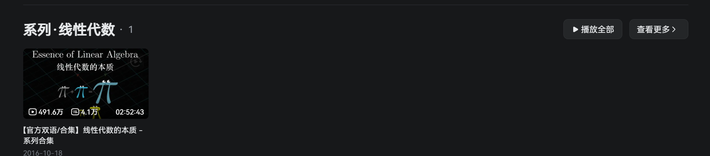
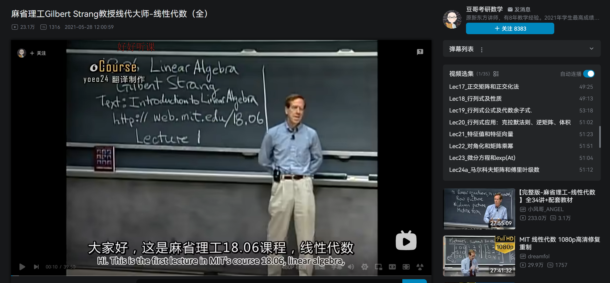
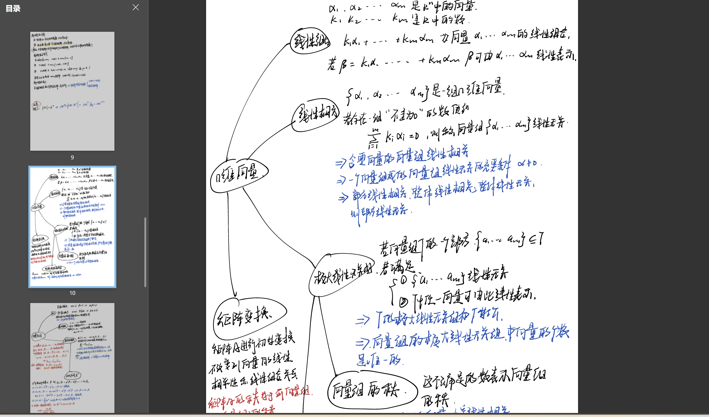

【Fresh研制】线性代数网课资料整理
糊说的fresh【bilibili】 2025.2.13线性代数入门兴趣指导： 推荐 3B1B的课程

这个是视频的可视化效果做得很好，如果在刚开始学习的时候对诸如矩阵的概念比较模糊， 那么这个视频会比较有帮助。（就我个人而言，3B1B对秩、行列式的理解会很有帮助）
系统性学习： 推荐 孔祥仁老师
孔祥仁老师的课程是系统性学习的好选择， 最值得说的是他的纯手写的课程，每个知识点 都说的非常的清楚，可能有一点我个人觉得不舒服的就是课程的 内容非常的多，包括课程和习题课啥的，如果你决定了他的课程一定要坚持看下去， 最后配合着校内老师的讲解资料就会好很多
最推荐（个人）： MIT线性代数

这个视频是MIT的线性代数课程，这个老师非常的幽默！ 并且他真的会分析每个知识点的来源，不是一股脑的告诉你 该怎么样，是一种数分的角度，但是这套课的难度是有的，更推荐 有一定基础（概念较为清楚），或者期末突击，需要注意这个视频的 年纪比较大了，有些运算和名称上是和我们国内不同，但还是 值得一看！
最后：
课程的安排因人而异，我因为前面对线代的概念实在不熟悉 因此“饱览”了很多推荐的网课内容 最后推荐这三个课程：
- 3B1B的课程
- 孔祥仁老师的课程
- MIT线性代数课程
还有的话，针对期末内容，我推荐使用思维导图来整理， 下面是我在考前使用了思维导图的形式整理了线代的概念 并且配合讲义（这里推荐武大黄正华老师，github上有）
